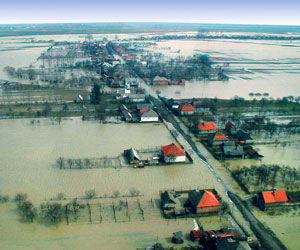
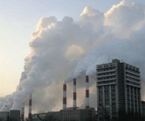
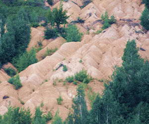
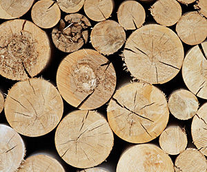
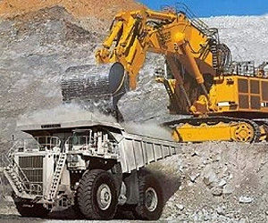
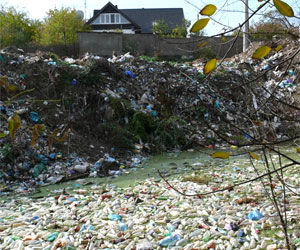
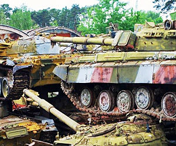
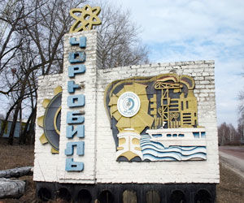

Экологические проблемы в Украине
Некачественная вода
Загрязнение воздуха
Деградация земельных ресурсов
Уничтожение лесов
Опасные геологические процессы
Бытовые отходы
Объекты военной деятельности
Чернобыльская катастрофа
Узнать подробнее об экологических проблемах